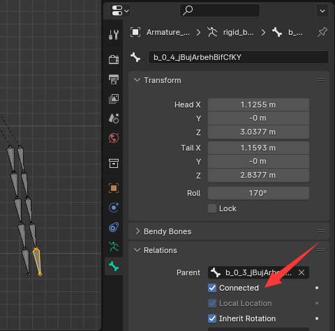
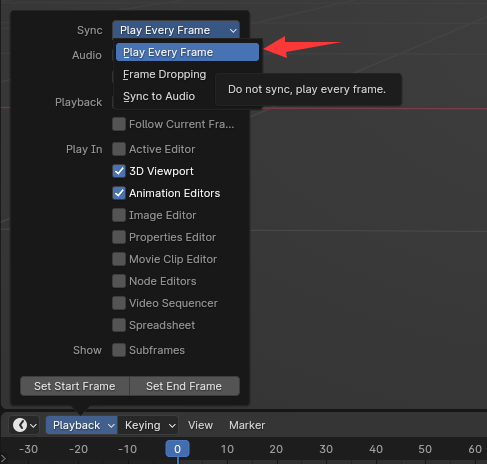
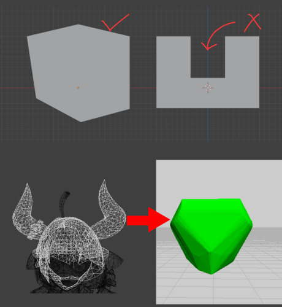

FAQ
ジョイント距離が 0 に設定されているにもかかわらず、シミュレーション後に相対変位が依然として発生するのはなぜですか?
physx などのシミュレーション エンジンの制約は絶対的な制約ではありません。 力 (運動学的剛体の力など) が大きすぎるか、位置ソルバーの反復が小さすぎると、制約から外れてしまいます。
① 位置計算反復回数を増やして計算精度を向上させる
② ボーン属性を Connected に設定すると、ボーンは親の尾部にハード拘束され、physx の回転結果のみが適用されます。
③ 追加のコンストレイントを設定します。 詳細については、追加のコンストレイント ドキュメントを参照してください。
なぜジッターが発生するのでしょうか？
剛体は強い拘束から離れると、拘束があるべき位置に戻ろうとし、大きな復元力が発生します。 このとき、想定位置への復帰や回転を妨げるkinematic学的剛体があると、シミュレーション結果にジッターが生じます。
①ハードコンストレイントに抵触しないようにkinematicの位置を調整する
② ジッタ部分を別途取り出し、競合するkinematic剛体を無効にして別途再計算
③ パラメータを調整します。 場合によっては、拘束を緩めたにもかかわらず、太ももが上がってスカートと衝突するときに多少の震えが生じることがあります。 これは、摩擦によって剛体がハードな拘束から切り離されたためと考えられます。 摩擦係数を下げることを試みることができます。
④ give a little bit distance limit. At the base of the thigh, jitter often occurs. This is because of the conflict between the thigh bone pivot and skirt base bone pivot. You can add a little bit distance limit to the bone rigid body at the base of the skirt to allow it to have a small amount of move to avoid jitter caused by the conflict of hard constraints. (Of course, you can also optimize the bone binding and model, but it is more cumbersome).
再生時にシミュレーションが早期に停止したのはなぜですか?
フレーム ステップが連続していない必要があります。 このアドオンは、シミュレートされるすべての連続フレームを取得する必要があります。
① 再生時にフレームを飛ばそうとする場合があります。
② 再生モードが「フレームごとに再生」を選択しているかどうかを確認します（タイムラインビューポート -> 再生 -> 同期）
変位の上限と下限を設定しているにもかかわらず、シミュレーションが移動できないのはなぜですか?
ボーンアトリビュートでconnectedがチェックされているか確認します。Connectedは、Blenderがボーンの変位を固定するためのオプションです。このオプションがチェックされたボーンは、ポスチャーモードで動くことができません。
ジョイント剛性と剛体質量が合っているかどうか。バネ剛性が大きすぎたり、剛体質量が小さすぎたりすると、剛体を動かす力が足りなくなり、動かせなくなる。
再生中の FPS が低すぎる場合はどうすればよいですか?
①メッシュを非表示にしてみます。 メッシュをコレクションに移動して非表示にし、アーマチュアのみで再生することができます。

② アーマチュアモディファイアのみを残すようにしてください。 ジオメトリ ノードなど、一部のモディファイアはパフォーマンスを大量に消費するため、それらを適用または無効にすることができます。
③ 剛体変更モードなしで再生すると、剛体変更モードでは 剛体シェイプを表示できますが、プレビューの描画 API 効率が高くなく、一部のデータはリアルタイムで計算する必要があるため、再生速度が遅くなります。
④ 反復ステップ数を減らします。 適切な数の反復ステップにより、計算速度を向上させることができます。 再生には 1 つの iter 番号を使用し、最終レンダリングでは高い iter 番号を使用できます。
⑤ アニメーションをキーフレームにベイクしてから再生してみます。
⑥ シミュレーションをいくつかの部分に分けて、別々にシミュレーションするようにしてください。
剛体変更モードでラグが発生した場合はどうすればよいですか?
① 更新間隔を長くします。
②「選択したボーンのみ」を選択すると、選択した剛体ボーンのみをプレビューします。
剛体ボーンを手動で移動できないのはなぜですか?
① このアドオンはドライバーオブジェクトでボーンを駆動するので、ドライバーオブジェクトを動かしてボーンを動かすことができます。
② 一時的にボーンを手動で移動したい場合は、ツールバーにドライバーを無効にする制約があります。 キーフレーム オプションと組み合わせて使用すると、一時的にボーンを制御できるようになります。
③ドライバーを完全に削除したい場合は、剛体変更モードでボーンを選択し、Ctrl+Alt+Shift+Cを押します。 これにより、ボーン コンストレイントが削除され、ドライバー オブジェクトが削除されます。 アニメーションのキーフレームはドライブ上に設定されているため、この操作によりアニメーションが削除されることに注意してください。
高速移動が剛体の問題を貫通
剛体が非常に高速で移動すると、剛体が貫通し、衝突が起こらなくなります。これを避けるために、physxにはccdという機能があります。しかし、私の練習では、そのような状況は見たことがなく、ccdは追加計算が必要なので、bonxには追加しませんでした。しかし、もしあなたが高速のリジッドボディ・シーンを持っていて、ペネトレーションが発生するのであれば、私にこの機能について考えさせるために、blenderのプロジェクトを送ることができます。
Why Custom Rigidbody Shape not work correctly
In rigidbody simulation, convex hull is used to save computational resources. If you use a concave hull shape, it will be baked into convex by physx.
なぜこのアドオンは空の obj を使用してボーンを駆動するのでしょうか?
これをやりたい開発者向け。 親を持つ obj の変換を設定したい場合は、update() を呼び出して親行列が最新であることを確認する必要があります。 ただし、update() 関数はシーン全体から更新するため、シーンが巨大な場合、プロセスが非常に遅くなります。
bpy.context.view_layer.update()